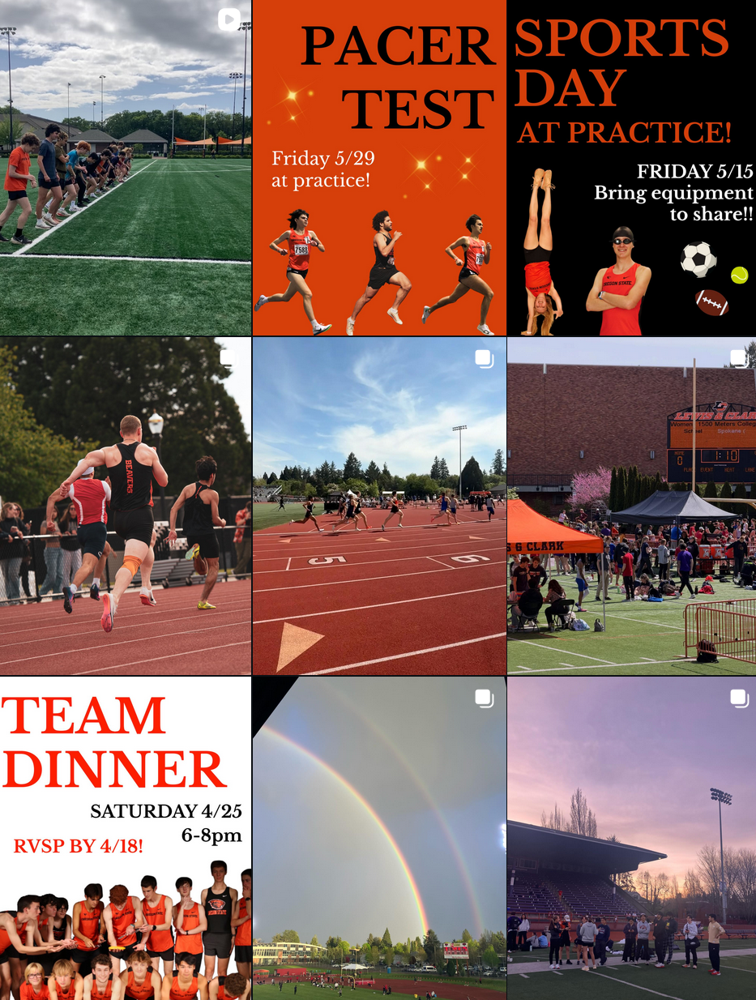
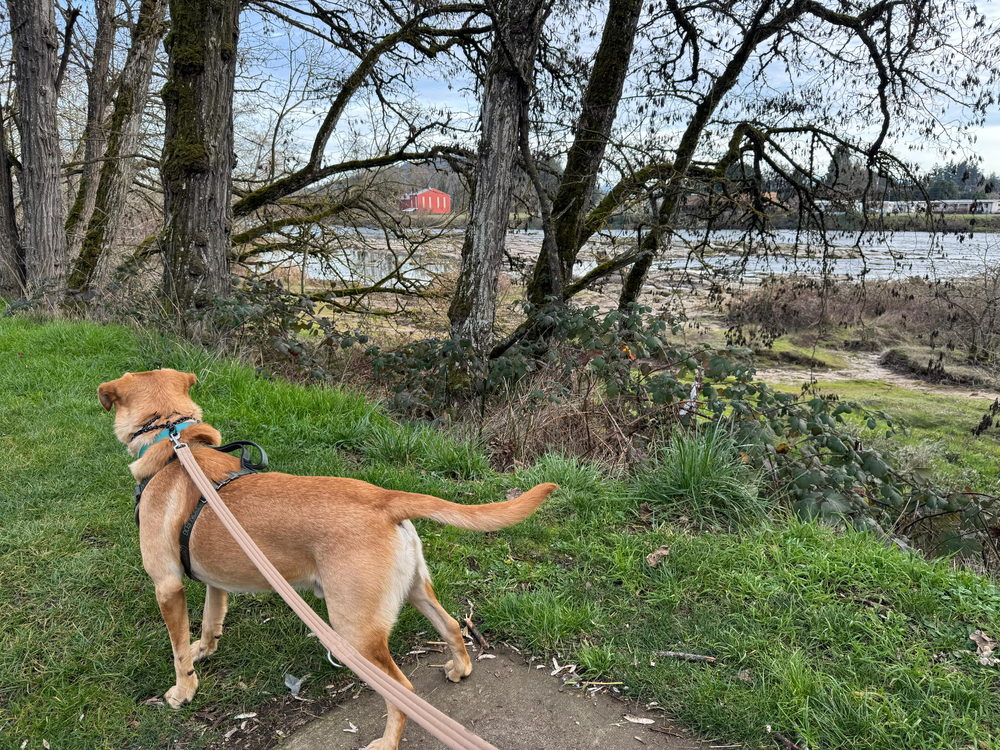

01 The Question
This is a thought experiment. The scale is deliberately unrealistic: I am not actually going to recruit a thousand runners or train anyone for three months. The assignment is to design a study, so I designed a big, ambitious one, and then used the research to stay honest about why even this would struggle to give a clean answer.
Science skills are the process behind a discovery: a clear question, a hypothesis, chosen variables, controls, and a plan to measure the result. They also include knowing the limits of your own design. This piece does both.
If runners add strength training to their week, do their race times actually get faster?
It sounds obvious that stronger legs would make you quicker. The surprising part is that the research is not sure. The mechanism people point to is running economy, defined in the review as the oxygen or metabolic cost to run at a given submaximal velocity
(Blagrove et al., 2018a, p. 1133, as cited in Bottrill, 2023). Better economy means less energy at the same pace. The open question is whether strength training reliably improves it.
02 Background & What the Research Says
I am grounding this in a 2023 literature review that gathered 19 studies on resistance training and running. It is the honest starting point, because its headline finding is essentially "we cannot tell yet."
That is not a dead end. It is the reason a study is worth designing at all, and it sets the bar for what a good design would have to control for.
“This review did not find sufficient evidence to definitively conclude that resistance training improves running economy or performance, but instead recommends steps to conduct more consistent and controlled future research.”
Bottrill (2023), Abstract, p. 2
Bottrill, James, "Resistance Training and Running Performance and Economy: A Literature Review" (2023). University Honors Theses. Paper 1333. Portland State University.
03 The Proposed Study
Step 1 · Recruit (optimistically)
I would reach out to every running club in the area. Oregon State has a running club, and to be cheerfully unrealistic about it, I will assume every one of its followers signs up.

Step 2 · Measure a baseline
At the start, every participant runs three time trials at their fastest effort: a 1 mile, a 5k, and a 10k. These are the baseline numbers we compare against later. Measuring real race times (not lab economy) is actually what the review recommends for usefulness:
“it may be more useful to just focus on measuring RP [running performance] through time trials over a distance that the subject trains for, as this has a great degree of external validity.”
Bottrill (2023), p. 18
Step 3 · Split into three groups
Do whatever
No instructions at all for three months. The baseline for normal life.
Strength + running
One hour of strength training and one hour of running, every day.
Running only
Two hours of running every day, and no strength training.
Hypothesis: after three months, Group B (strength + running) will have the best improvement in 1 mile, 5k, and 10k times.
Null hypothesis: the strength training makes no measurable difference, matching what the review actually found across the literature.
Step 4 · Run it for three months, then re-test
Baseline
Everyone runs the 1 mile, 5k, and 10k time trials at max effort.
Intervention
Each group follows its assignment. Watches and logs track everything.
Re-test
Everyone repeats the same three time trials. Compare to baseline, by group.
The problem hiding in the design
How do you fairly compare "one hour of lifting plus one hour of running" against "two hours of running"? There is no honest exchange rate between them, and the review says as much:
“There is no standardised volume and frequency of either mode of training throughout the literature.”
Bottrill (2023), p. 16
The review even suggests a target ratio of endurance to resistance training that should not stray far from 3:1
(Bottrill, 2023, p. 19). My design uses a 1:1 split, which already bends one of its recommendations. That is the kind of thing this assignment is for: noticing it.
04 The Variables I Cannot Control
With over a thousand random people, the confounds pile up fast. I would at least record each person's age and sex, but I cannot hold them still, and I would give no diet instructions, which alone could swamp the results.
Age, sex, training history, diet, and body type all change how a person responds to training. The review is blunt that this is exactly what sinks a clean conclusion:
“the null hypothesis cannot be rejected to definitively conclude that any form of RT improves RE or performance because of the overwhelming array of confounding variables.”
Bottrill (2023), Conclusion, p. 18–19
Performance and trainability shift with age, so the same program lands differently on a 22 year old and a 50 year old.
“There is a noticeable decline in performance after 30 years.”
Bottrill (2023), p. 14
Men and women can respond differently, to the point the review suggests studying one at a time.
“Barnes et al. (2013) found that RT was beneficial to RE in females, but possibly harmful in men.”
Bottrill (2023), p. 14
Training history varies wildly, and with no diet control, two people doing the same program are not really running the same experiment.
“varying results cannot be definitively attributed to the RT interventions.”
Bottrill (2023), p. 16
05 Reality Check
To be clear about how unrealistic this is, here is the design grading itself against the review's own recommendations.
The n is a fantasy
Assuming 1,178 strangers will commit to a daily routine for three months, show up for timed 10k tests, and follow their group is not going to happen. Real recruitment and dropout would gut the sample.
Too short
My plan runs three months (about 12 weeks). The review recommends studies be at least 20 weeks in length
(Bottrill, 2023, p. 19), so mine may end before any real effect could show.
Still a healthy design
On the upside, the variable I am testing is a healthy one. Strength training and running are both good for participants, with no risky dieting or extreme load, which follows the assignment's guidance to test changes that should improve health.
06 Why I Actually Care
So what does a thousand-person fantasy study have to do with me? Looking at my own data, I have run for about fifteen minutes a day, give or take, for a long stretch, and my 5k time has not really improved. That is almost certainly about how little I run, not a mystery. I just run easy. I do not run fast.
Lately I have been trying to push to twenty minutes a day or more, which is about all I have time for. That is exactly why the question matters to me. If strength training could improve my times too, then instead of only piling on more running, I could add something new that might take less time and still help. At-home strength training is also just more accessible than running: sometimes it is raining, or freezing, or the trail I use is packed with people I would rather not weave around.

I am the kind of runner the review basically sets aside, since recreational runners may train for general health and fitness rather than for a specific event
(Bottrill, 2023, p. 14). I am not chasing a race. I just want the time I spend to count. The honest takeaway, and the whole point of this piece, is that the research cannot yet promise me that adding strength work would make me faster. It can only say it might, and that finding out for sure is genuinely hard.
Portfolio: Science Skills
- Grounded: The whole design is anchored to a literature review, with direct quotes carrying the key claims.
- Honest: It states a hypothesis, then uses the source to show why even a huge study would struggle to confirm it.
- Variables: One thing changed per group, with the uncontrollable confounds named out loud.
- Personal: It connects a thousand-person fantasy back to a real reason I would want the answer.